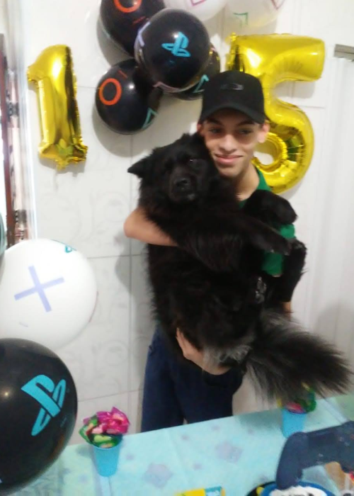
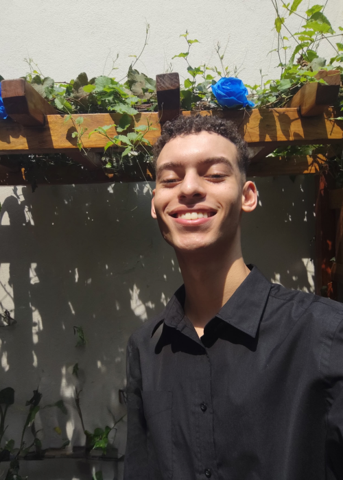

Sobre Mim
Olá! Meu nome é Victor Hugo e sou o criador desse website para cachorros!
O website Audoção é um projeto que visa dar visibilidade para adoção de cães em situações de rua,
desde pequeno sempre fui apaixonado nesses peludos e vivi momentos incríveis com meus dois cachorros. Mas
por azar do destino
uma infelicidade me aconteceu e tive a grande dor de perder o meu primeiro cachorro e ficar anos e anos com
essa perda em meu peito.
Então o Audoção surge como uma forma de minimizar esse impacto e também recriar uma das minhas melhores
experiências que foi adotar um cachorro!! Espero que aproveite e possa
encontrar sua pata gemêa.




Duque
O meu primeiro amigo foi o Duque, um vira-lata muito carismático, ele era um filhote que chegou na nossa
casa de um forma inesperada, um grupo de meninos bateram no meu portão durante a noite informando que a
cadela de uma vizinha próxima havia dado a luz a alguns filhotes e não tinha com quem eles ficassem. Dentre
esses filhotes estava Duque, um cachorro pequenino, felpudo e preto como a noite! Na hora ficamos encantados
com Duque em nossa frente e decidimos ficar com ele.
Bob
Em 24 de janeiro minha mãe estava conversando com uma amiga de serviço dela, ela informou que a amiga dela
tinha colocado alguns filhotes para adoção e tinha um filhote que era muito similar ao Duque, na hora que
ela me mostrou a foto veio uma animação extrema no meu coração, eu e minha família decídimos adotar o Bob
que é o nosso cachorro atual. Bob é um cachorro da raça Laphund que de início se parece muito com um chow
chow, entretanto sua língua não é azul. Bob é um cachorro muito energético e amigavél, ele adora ir passear
e tem muitas similaridades com meu antigo cachorro que era o Duque. Bob está conosco já vai fazer 5 anos e é
um dos meus melhores amigos.